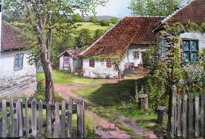

Etnografska izložba o običajima i zanatima
25. septembar 2026.U Bijeljini je otvorena etnografska izložba o svakodnevici, običajima i zanatima naših predaka u organizaciji Udruženja poljoprivrednih proizvođača „Poljoprivreda".
Pročitaj članak
Etno izložba „Srce Semberije – život u prošlosti" otvorena je od 25. septembra do 25. oktobra 2026. godine na adresi Komitska bb u Bijeljini. Više stotina knjiga, tekstila i odjeće, zavidna kolekcija starih radio i TV aparata i bogata kolekcija starog namještaja i ćilima prikazuju šta se sve koristilo na našim prostorima krajem 19. i početkom 20. vijeka — koji materijali su se koristili, kako su predmeti pravljeni i koliko su trajali.
Pažljivom posjetiocu izložbe neće promaći koliko je život i rad u prošlosti bio racionalan, efikasan i jednostavan, koliko su svakodnevni predmeti bili od prirodnih materijala, koliki je sklad postojao između života na selu i prirodnog okruženja, i to je samo jedan od ciljeva koje treba da prikaže ova izložba. Posebno želimo da istaknemo da svaki posjetilac obrati pažnju na dizajn, ergonomiju i boje predmeta ali i tekstila kao i odjeće koja se koristila u prošlosti.
Na izložbi je prikazano više od 1.000 eksponata, kojim je obuhvaćen niz segmenata iz prošlosti, kao što su: poljoprivreda, zanatstvo, školstvo, muzika i medicina. Ističemo kolekciju starih pegli, fotoaparata, radio uređaja, satova, knjiga, posuđa, odjeće, ćilima, rukotvorina, ploča, namještaja, pisaćih mašina, lampi i drugog.
Cilj izložbe je da edukuje i informiše posjetioce o prošlosti i da ih podstakne da razmišljaju o vezi između prošlosti i sadašnjosti, ali i da probudi osjećaj i emocije. Udruženje je do sada više puta javno nastupalo na sajmovima i etno smotrama u Republici Srpskoj, a tokom 2025. godine samostalno su organizovali etno izložbu koja je bila postavljena na površini od 400 m² sa takođe zavidnim brojem izloženih predmeta. Izložba je trajala dva mjeseca, a istu je posjetilo preko 10.000 posjetilaca. Internet prezentaciju je pogledalo više od 70.000 posjetilaca.
Posebno su nas obradovali pozitivni komentari izložbe, a ono što ohrabruje jeste činjenica da je na izložbi predstavljen samo dio predmeta koji se nalaze u našoj kolekciji. Zbog uslova, nemogućnosti pravilne obrade predmeta, nepostojanja adekvatnog izložbenog prostora i namještaja, veliki dio predmeta ostao je u magacinu udruženja da se čuva, nadamo se, do sljedeće izložbe. Pozivamo vas da posjetite našu izložbu.
25. septembar 2026.
Danas je u Bijeljini svečano otvorena etno izložba „Srce Semberije", koja kroz više od 1.000 eksponata predstavlja predmete, priče i uspomene vezane za život i svakodnevicu nekadašnjeg seoskog domaćinstva.
Kroz sačuvane predmete i zbirke, izložba čuva dio materijalnog i kulturnog nasljeđa Semberije i približava posjetiocima način života, rada i običaja prethodnih generacija.
Posebna pažnja posvećena je predmetima koji su nekada bili dio svakodnevnog života — od namještaja, tekstila i posuđa do starih radio-aparata, knjiga, alata, kamera, satova, pisaćih mašina i drugih predmeta.
Pogledajte fotografije sa otvorenja izložbe.
Pogledajte kako su mediji zabilježili otvorenje izložbe „Srce Semberije".
U Bijeljini je otvorena etnografska izložba o svakodnevici, običajima i zanatima naših predaka u organizaciji Udruženja poljoprivrednih proizvođača „Poljoprivreda".
Pročitaj članakU Bijeljini je otvorena etnografska izložba u organizaciji Udruženja poljoprivrednih proizvođača „Poljoprivreda".
Pogledaj videoU organizaciji Udruženja poljoprivrednih proizvođača „Poljoprivreda", svečano je otvorena jedinstvena etnografska izložba u Bijeljini koja kroz više od 1.500 pažljivo prikupljenih eksponata dočarava svakodnevicu, rad i običaje naših predaka sa prostora nekadašnje Jugoslavije.
Pročitaj članak